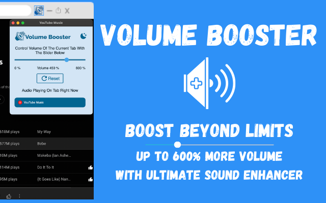

In the vast digital media landscape, the importance of exceptional audio cannot be overstated. Whether you're captivated by an enthralling video, lost in the rhythm of your favorite songs, or absorbed in a compelling podcast, high-quality sound is essential for a truly immersive experience. Unfortunately, lackluster audio can quickly shatter this enjoyment. Enter Volume Booster, a groundbreaking browser extension that redefines your auditory experience. By significantly enhancing sound quality and boosting volume by up to 600%, Volume Booster revolutionizes how you engage with online content. Join us as we delve into this innovative tool and discover how it can elevate your digital listening to extraordinary heights.
